입력 값이 없는 상태에서 사용자가 초기에 달력 아이콘을 클릭할 때 달력에 표시되는 날짜를 지정 및 값으로 획득할 수 있습니다. 이 기능은 아래의 속성과 함수로 사용할 수 있습니다. - defaultDate : (속성) 초기에 달력 아이콘을 클릭할 때 달력에 표시되는 날짜 - getDefaultDate : (함수) 현재 InputCalendar에 설정된 defaultDate의 value를 반환 - setDefaultDate : (함수) 속성 defaultDate의 value를 설정
속성 'defaultDate'에 기본 값을 확인하기
속성 'defaultDate'에 날짜 값을 설정하기
속성 'defaultDate'에 메소드로 날짜 값을 설정 및 획득하기
캘린더 아이콘을 클릭합니다.
※ 속성 defaultDate의 기본 설정이 빈 문자열로 지정되어 있습니다.
[브라우저(Chrome) 실행 예시]
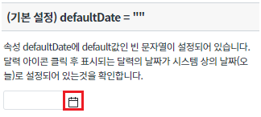
defaultDate 속성 값을 빈 문자열로 설정했기 때문에 달력에 표시된 날짜가 시스템상의 오늘 날짜가 표시된 것을 확인합니다.
[브라우저(Chrome) 실행 예시]
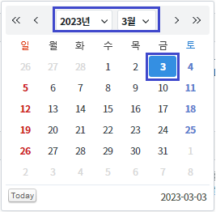
캘린더 아이콘을 클릭합니다.
※ 속성 defaultDate에 문자열 "20230101"이 설정되어 있습니다.
[브라우저(Chrome) 실행 예시]
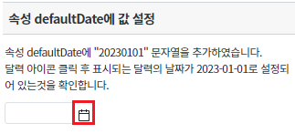
defaultDate 속성 값을 "20230101"로 설정했기 때문에 달력에 표시된 날짜가 2023-01-01이 표시된 것을 확인합니다.
[브라우저(Chrome) 실행 예시]
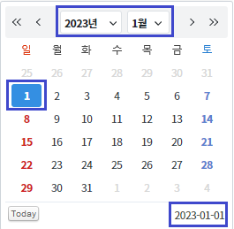
버튼 달력에 표시되는 날짜를 1993-05-31로 변경하기 를 클릭합니다.
버튼에 있는 setDefaultDate() 메소드로 인해 문자열 "19930531"이 defaultDate 속성에 설정됩니다.
[브라우저(Chrome) 실행 예시]
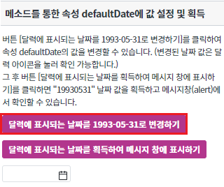
STEP1으로 인해 바뀐 속성 값을 확인하기 위해 캘린더 아이콘을 클릭합니다.
[브라우저(Chrome) 실행 예시]
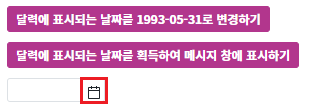
달력에 날짜가 1993-05-31인 것을 확인합니다 .
[브라우저(Chrome) 실행 예시]
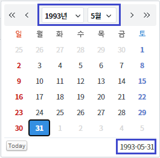
버튼 달력에 표시되는 날짜를 획득하여 메시지 창에 표시하기 를 클릭합니다.
버튼에 있는 getDefaultDate() 메소드로 속성 defaultDate에 설정되어있는 "19930531"을 획득합니다.
[브라우저(Chrome) 실행 예시]
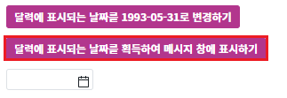
STEP4에서 획득한 값을 메시지 창(alert)에서 표시하는 것을 확인합니다.
[브라우저(Chrome) 실행 예시]
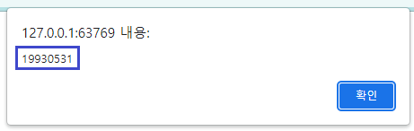
InputCalendar의 달력 아이콘을 클릭 시 표시되는 달력의 날짜를 설정하기 위해 아래의 속성을 설정합니다.
[필수] defaultDate="YYYYMMDD" //[default:""(빈 스트링), YYYYMMDD] 입력 값이 없는 상태에서 사용자가 초기에 달력 아이콘을 클릭할 시 표시되는 달력에 날짜를 설정한다.
그림 1.웹스퀘어5 SP5 스튜디오의 Property View(속성창) 예시
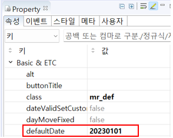
<!-- inputCalendar 의 소스 본문 예시 --> <w2:inputCalendar defaultDate="20230101" id="ica_exam_2"> </w2:inputCalendar>
InputCalendar의 달력 아이콘을 클릭 시 표시되는 달력의 날짜를 설정 또는 값을 획득하기 위해 아래의 함수를 사용합니다.
[선택] setDefaultDate // defaultDate 속성을 설정
[선택] getDefaultDate // defaultDate 속성으로 설정된 값을 획득
[소스 코드 예시]
/** * 버튼 [달력에 표시되는 날짜를 1993-05-31로 변경하기] 클릭 시 */ scwin.btn_ex1_onclick = function (e) { // InputCalendar 'ica_exam_3'의 날짜 값을 "20230101" -> "19930531" 변경하기 ica_exam_3.setDefaultDate("19930531"); };
[소스 코드 예시]
/** * 버튼 [달력에 표시되는 날짜를 획득하여 메시지 창에 표시하기] 클릭 시 */ scwin.btn_ex2_onclick = function (e) { // InputCalendar 'ica_exam_3'의 날짜 값을 획득하여 메시지 창(alert)에표시하기 let date = ica_exam_3.getDefaultDate(); alert(date); };
defaultDate
getDefaultDate
setDefaultDate
[웹스퀘어5 SP5 개발 가이드] InputCalendar
링크 : https://docs1.inswave.com/sp5_user_guide#5d387e9ce2bee0e5
[웹스퀘어5 SP5 개발 가이드] InputCalendar 달력 아이콘을 클릭할 때 표시되는 날짜 설정
링크 : https://docs1.inswave.com/sp5_user_guide#c6cc3a2328213d52#
InputCalendar 달력 아이콘을 클릭할 때 표시되는 날짜 설정
링크 : https://youtu.be/nEaLwbk6w6Y
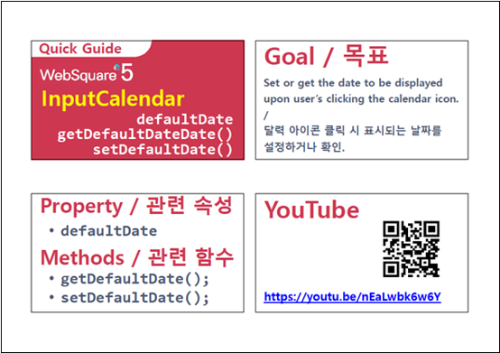